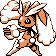

#237
Lopunny
Normal
It is extremely cautious and fast senses danger Its soft ears can deliver powerful defensive strikes
Base stats Total 426
HP65
Attack76
Defense84
Speed105
Special96
Details
- Species
- Rabbit
- Height
- 3'11"
- Weight
- 73.4 lb
- Catch rate
- 60
- Base exp
- 168
- Growth
- Medium Fast
Level-up moves
LevelMoveType
StartTackleNormal
StartDefense CurlNormal
StartQuick AttackNormal
Lv 6Defense CurlNormal
Lv 10Quick AttackNormal
Lv 16Double KickFighting
Lv 25HeadbuttNormal
Lv 32Dizzy PunchNormal
Lv 40Body SlamNormal
Lv 48Double-EdgeNormal
Evolution
Evolves from Buneary
Where to find
Not found in the wild — evolve, trade or catch it elsewhere.
TM / HM
TM01 Mega PunchTM05 Mega KickTM06 ToxicTM08 Body SlamTM09 Take DownTM10 Double-EdgeTM15 Hyper BeamTM13 Ice BeamTM14 BlizzardTM31 MimicTM32 Double TeamTM34 BideTM44 RestTM45 Thunder WaveTM50 SubstituteHM04 Strength